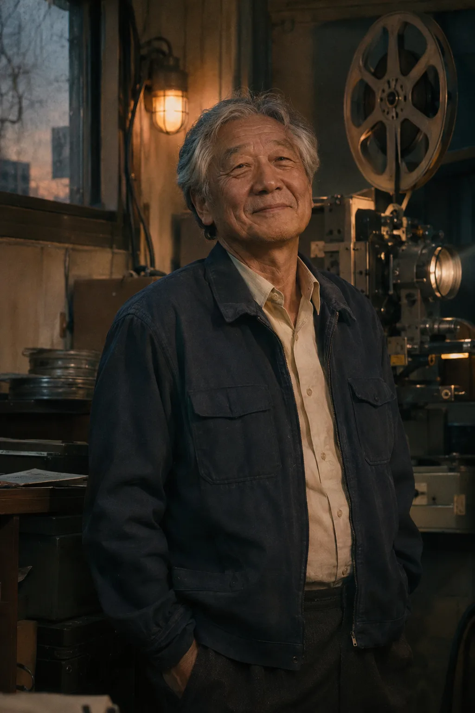
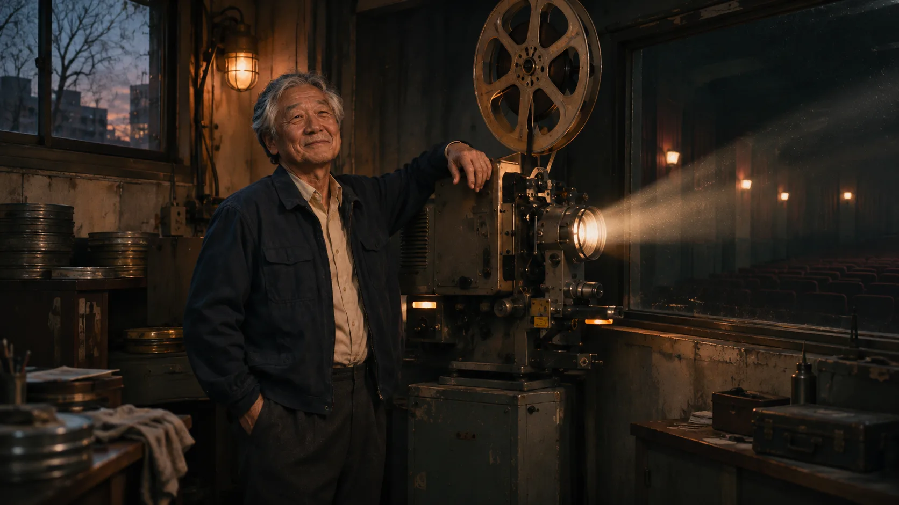
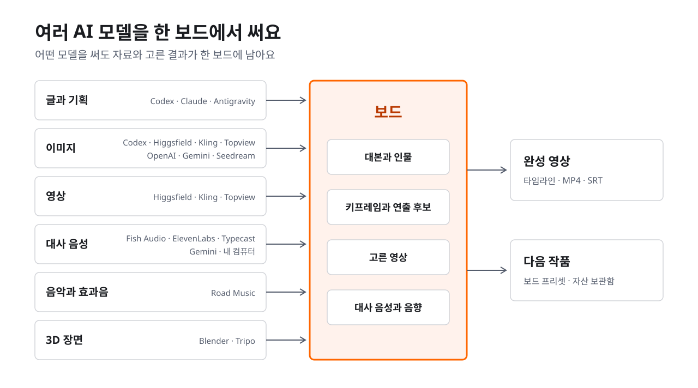
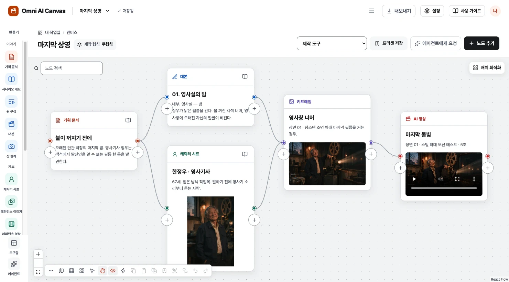
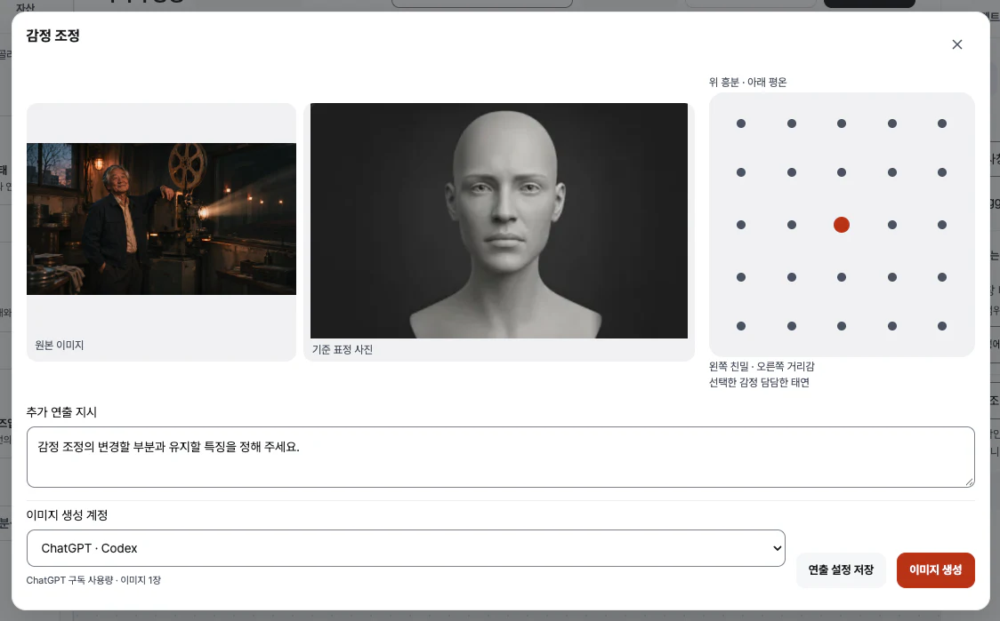
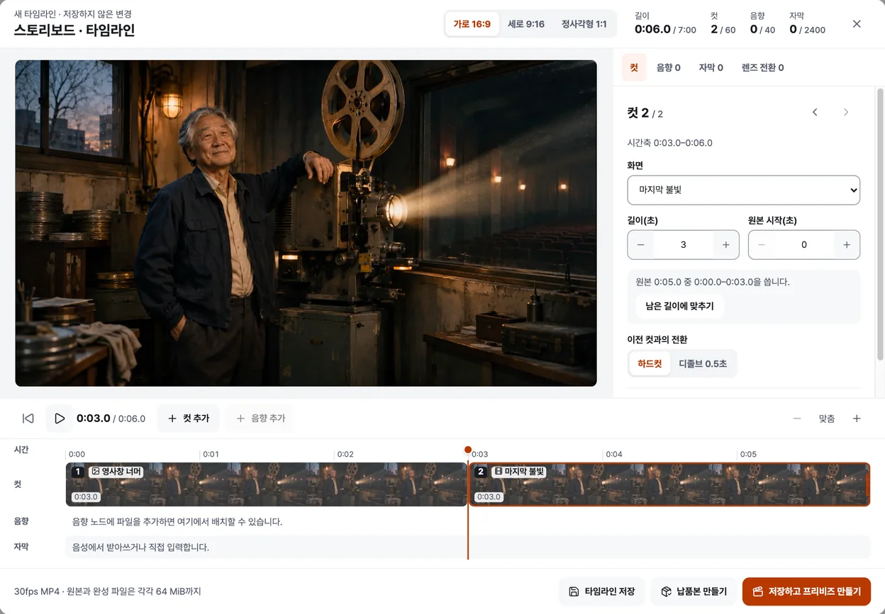
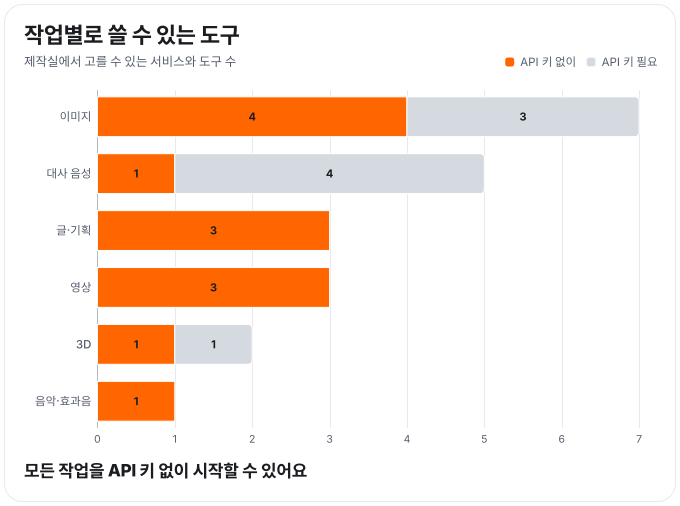

Omni AI Canvas캔버스 열기 →Omni AI Canvas캔버스 열기 →
Omni AI Canvas캔버스 열기 →Omni AI Canvas캔버스 열기 →대본부터 완성 영상까지, 여러 AI 모델을 한 보드에서.
숏폼, 드라마, 광고를 직접 만드는 제작자를 위한 로컬 영상 제작실이에요.
“마지막 필름이야.”


만드는 곳이 달라도 자료와 선택은 같은 보드에 남아요.

〈마지막 상영〉의 실제 보드예요.



도구 11가지 모두 보기 →
